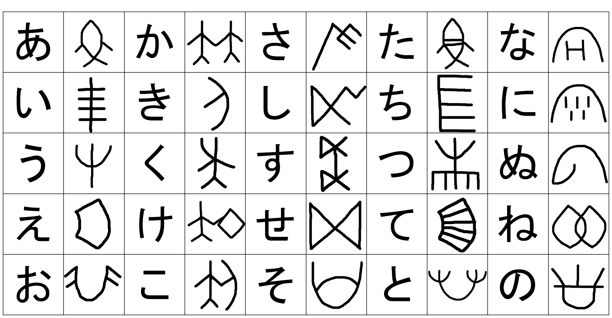
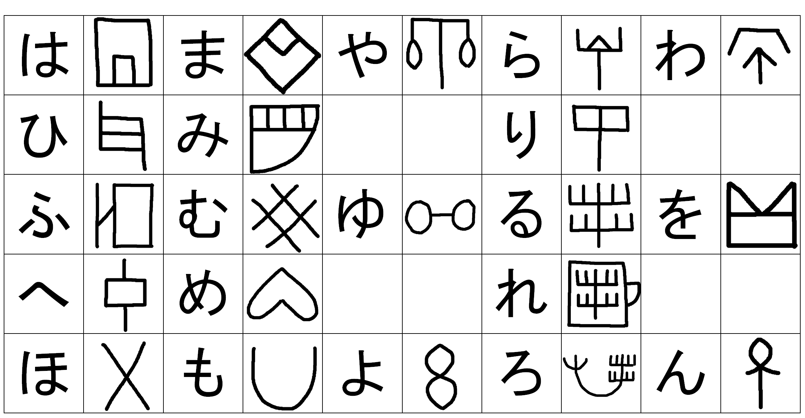
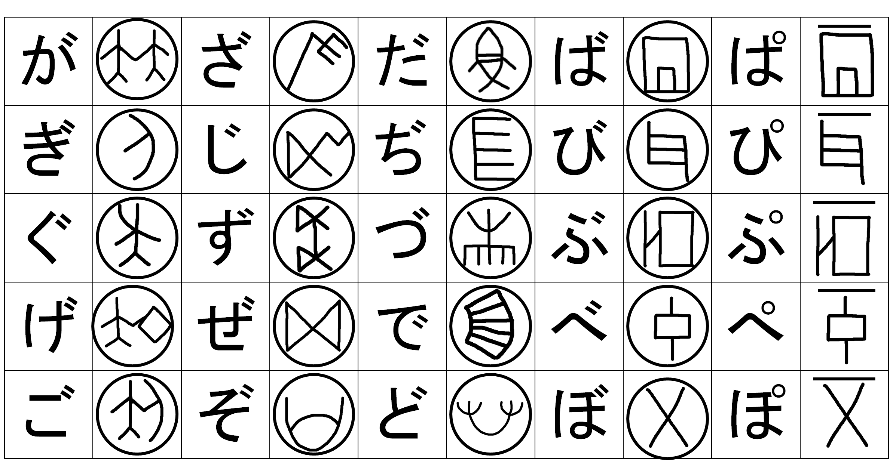

謎解きでは使いませんでしたが、促音や拗音、つまり「っ」や「ゃ」はそのまま「つ」や「や」で表し、長音、つまり「－」は省略します。
このことは謎解きを解いたみなさんはわかっているはずですが、この文字は右から左に書きます。日本語と違う言語体系というのを少しでも感じてほしいです
ここからは裏話ですが、今回用いた文字は未解読のインダス文字です。私が適当に日本語に割り振っただけなので悪しからず。ちなみに実際にインダス文字は右から読むことが明らかになっていて、一部には牛耕式もみられるそうです。それに対して文字の数が表音文字にしては多すぎるので表意文字または表音・表意文字だという考えが主流だそうです。